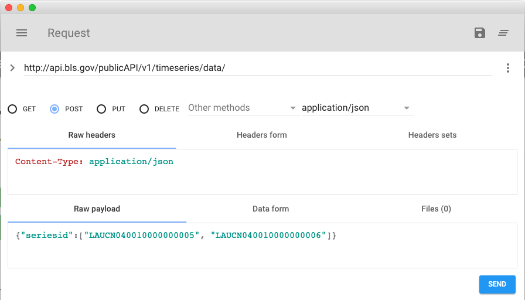
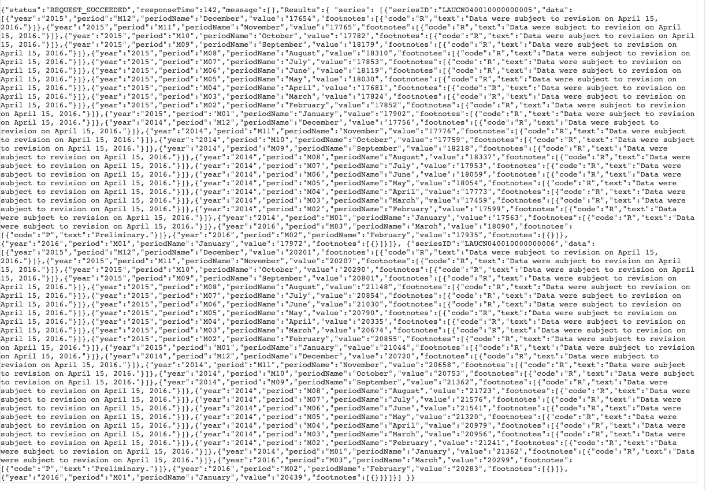

We will now make a post request to the BLS API. POST requests are often used to submit multiple pieces of data to a server so that we can obtain more data to access. The case of the BLS API, we would want to make requests to obtain labor statists for multiple series at the same time to be displayed.
To do this in its simplest form, we will want to use a chrome extension called Advanced REST Client linked here. This client is used to test and make post requests so that we can test that we are making functional calls. Download and install the Advanced REST Client.
The BLS documentation states that when we make a post request, we must send it to the URL
http://api.bls.gov/publicAPI/v1/timeseries/data/ and then have a JSON payload of the format {“seriesID”:[Series1, Series2]}. This can be done in the advanced REST client as shown here.

This is a picture of the Advanced REST client. In the URL bar we have http://api.bls.gov/publicAPI/v1/timeseries/data/, in the content type field we have application/jsoncode, and in the raw payload we have {"seriesid":["LAUCN040010000000005", "LAUCN040010000000006"]}. This is an example payload from the BLS documentation linked here. When you press send you should see something like this.

You can parse this or even look at it formatted with the ARC extension.
Let's move on to learn how to work with the API
previous